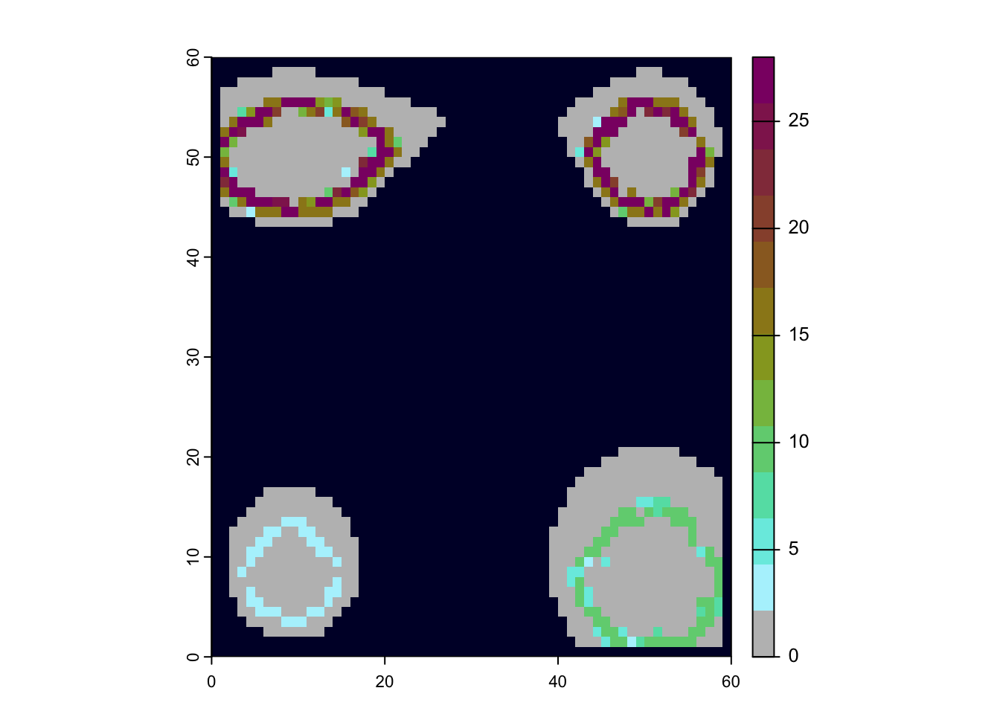
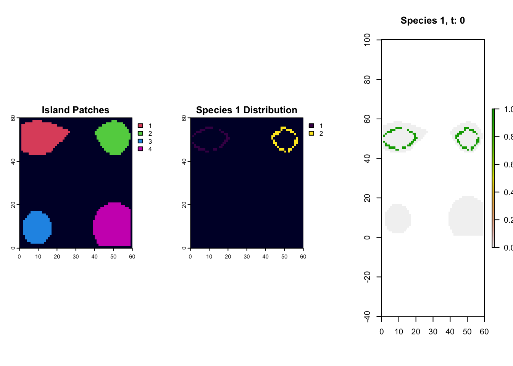
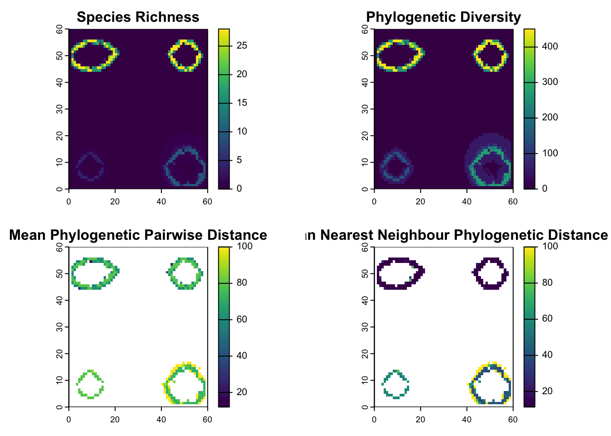
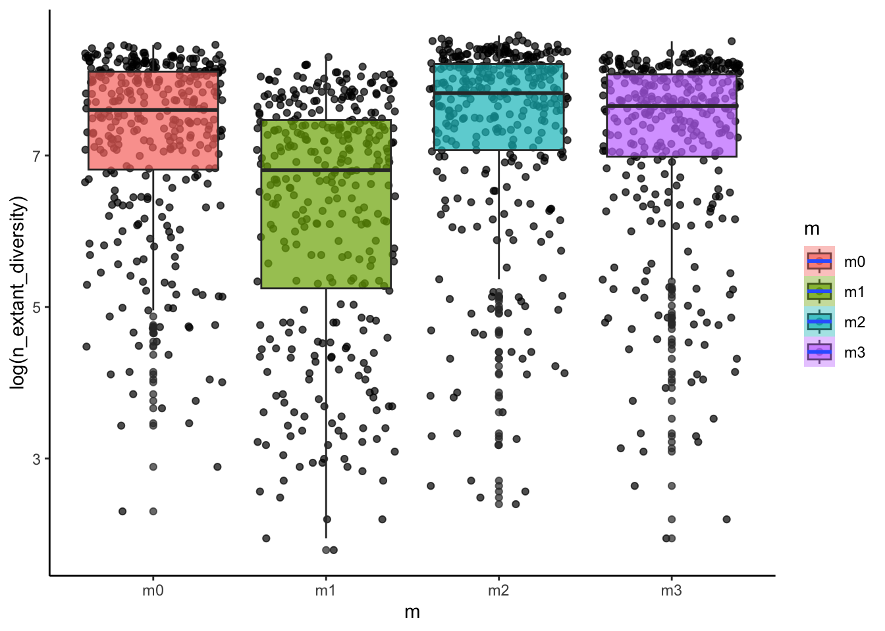

require(gen3sis)
require(terra)
require(ape)
require(phytools)
require(picante)
require(here)
setwd(here())4 üñ•Ô∏è Silicodiversity
Exploring outputs
In this practical we will explore the outputs from gen3sis using the island simulations we ran yesterday. We will learn how to use this data with common R packages for phylogenetic comparative methods, community phylogenetics, biogeography and much more.
The goal for today will be to produce:
A map of Species Richness from the simulation summary object
A plot of Lineages Through Time from the phylogeny
Plot of species trait values on a phylogenetic tree, by linking the species objects to the phylogeny
Maps of Phylogenetic Diversity by linking species objects to the landscape and phylogeny
First, let’s make sure we have the necessary packages loaded
Simulation summary object (sgen3sis.rds)
The first object we will look at today is the sgenesis.rds file. This file contains a summary of the simulation. Which we can plot (as we did yesterday) with the plot_summary function. This is the same object, that you would have in memory by running a simulation with run_simulation.
output_dir <- "output/islands"
sim <- readRDS(file.path(output_dir, "config_islands_simple_Day1Prac3_M3/sgen3sis.rds"))
# look at what the simulation summary contains
names(sim)[1] "summary" "flag" "system" "parameters"The first element is the sim summary. This contains a record of the history of speciation, extinction, and species richness through time (phylo_summary), a history of the number of total grid cells occupied during the simulation through time (occupancy) and the species richness of each grid cell at the final time step.
str(sim$summary)List of 3
$ phylo_summary : num [1:52, 1:4] 4 4 4 4 4 4 4 4 5 5 ...
..- attr(*, "dimnames")=List of 2
.. ..$ : chr [1:52] "initial" "50" "49" "48" ...
.. ..$ : chr [1:4] "total" "alive" "speciations" "extinctions"
$ occupancy : Named num [1:52] 1 0.522 0.523 0.521 0.512 ...
..- attr(*, "names")= chr [1:52] "initial" "50" "49" "48" ...
$ richness-final: num [1:3600, 1:3] 0.5 1.5 2.5 3.5 4.5 5.5 6.5 7.5 8.5 9.5 ...
..- attr(*, "dimnames")=List of 2
.. ..$ : chr [1:3600] "1" "2" "3" "4" ...
.. ..$ : chr [1:3] "x" "y" "0"# phylo summary
head(sim$summary$phylo_summary) total alive speciations extinctions
initial 4 4 4 0
50 4 4 0 0
49 4 4 0 0
48 4 4 0 0
47 4 4 0 0
46 4 4 0 0# occupancy
head(sim$summary$occupancy) initial 50 49 48 47 46
1.0000000 0.5215647 0.5232108 0.5211665 0.5117967 0.5004398 # occupancy
head(sim$summary$`richness-final`) x y 0
1 0.5 59.5 0
2 1.5 59.5 0
3 2.5 59.5 0
4 3.5 59.5 0
5 4.5 59.5 0
6 5.5 59.5 0These data can be visualized with the plot_summary function
# Visualize the outputs
plot_summary(sim)
We can also use these data to map out patterns of species richness
# make sure the landscape is loaded
lc <- readRDS(file.path("data", "landscapes", "islands","landscapes.rds"))
# can remove cells with elevation below sea level at timestep 0 (present-day) to see the outlines of the islands
na_mask <- is.na(lc$elevation[,"0"])
rich <- sim$summary$`richness-final`
rich[na_mask,3] <- NA
# turn richness summary into a raster
richness <- rast(rich, type="xyz")
# plot, the sea is darblue, given by hexadecimal color code
plot(richness, col=c("grey", gen3sis::color_richness(12)), colNA="#000033")
The next part of the simulation summary object is the flag which will tell us if the simulation ran successfully. It should give “OK”
sim$flag[1] "OK"Next is the system summary. This is information about the R version, R packages, and operating system used in the simulation. This ensures complete repeatability. It also tells us the runtime of the simulation.
sim$system$`runtime-hours`
[1] 0.05406023
$`gen3sis-version`
[1] '1.5.11'
$`R-version`
_
platform x86_64-w64-mingw32
arch x86_64
os mingw32
crt ucrt
system x86_64, mingw32
status
major 4
minor 2.2
year 2022
month 10
day 31
svn rev 83211
language R
version.string R version 4.2.2 (2022-10-31 ucrt)
nickname Innocent and Trusting
$OS
sysname
"Windows"
$`session-information`
R version 4.2.2 (2022-10-31 ucrt)
Platform: x86_64-w64-mingw32/x64 (64-bit)
Running under: Windows 10 x64 (build 19045)
Matrix products: default
locale:
[1] LC_COLLATE=English_Australia.utf8 LC_CTYPE=English_Australia.utf8
[3] LC_MONETARY=English_Australia.utf8 LC_NUMERIC=C
[5] LC_TIME=English_Australia.utf8
attached base packages:
[1] stats graphics grDevices utils datasets methods base
other attached packages:
[1] here_1.0.1 picante_1.8.2 nlme_3.1-160 vegan_2.6-4
[5] lattice_0.20-45 permute_0.9-7 phytools_2.1-1 maps_3.4.1
[9] ape_5.7-1 terra_1.7-29 gen3sis_1.5.11
loaded via a namespace (and not attached):
[1] Rcpp_1.0.10 compiler_4.2.2 iterators_1.0.14
[4] tools_4.2.2 digest_0.6.31 lifecycle_1.0.4
[7] gdistance_1.6.4 mgcv_1.8-42 pkgconfig_2.0.3
[10] rlang_1.1.3 fastmatch_1.1-3 Matrix_1.6-5
[13] foreach_1.5.2 igraph_2.0.3 cli_3.6.0
[16] rstudioapi_0.14 parallel_4.2.2 expm_0.999-7
[19] xfun_0.47 coda_0.19-4.1 cluster_2.1.4
[22] stringr_1.5.1 raster_3.6-26 knitr_1.48
[25] vctrs_0.6.0 generics_0.1.3 rprojroot_2.0.4
[28] scatterplot3d_0.3-44 combinat_0.0-8 grid_4.2.2
[31] glue_1.6.2 optimParallel_1.0-2 phangorn_2.11.1
[34] sp_2.1-4 magrittr_2.0.3 splines_4.2.2
[37] codetools_0.2-19 MASS_7.3-58.3 mnormt_2.1.1
[40] numDeriv_2016.8-1.1 quadprog_1.5-8 stringi_1.7.12
[43] doParallel_1.0.17 clusterGeneration_1.3.8Finally the summary object contains the config information and model parameters used.
sim$parameters$gen3sis
$gen3sis$general
$gen3sis$general$random_seed
[1] 666
$gen3sis$general$start_time
[1] 50
$gen3sis$general$end_time
[1] 0
$gen3sis$general$max_number_of_species
[1] 50000
$gen3sis$general$max_number_of_coexisting_species
[1] 20000
$gen3sis$general$end_of_timestep_observer
function(data, vars, config){
plot_richness(data$all_species, data$landscape)
save_species() # saves a species and landscape objects for desired timesteps
}
<environment: 0x00000208771f4170>
$gen3sis$general$trait_names
[1] "dispersal" "temp_niche_centre" "temp_niche_width"
[4] "start_island"
$gen3sis$general$environmental_ranges
list()
$gen3sis$general$verbose
[1] 1
$gen3sis$initialization
$gen3sis$initialization$initial_abundance
[1] 1
$gen3sis$initialization$create_ancestor_species
function(landscape, config) {
# browser()
co <- landscape$coordinates
# If we wouldn't have passe the patches though the environment, we could have done this:
# sp1 <- co[which(co[,1]<20&co[,2]<30),]
# sp2 <- co[which(co[,1]>20&co[,2]<30),]
# sp3 <- co[which(co[,1]<20&co[,2]>30),]
# sp4 <- co[which(co[,1]>20&co[,2]>30),]
# however, we made thinks simpler to you.
# get patches vector
pv <- landscape$environment[, "patch"]
# species_coords <- list(sp1,
# sp2,
# sp3,
# sp4)
new_species <- list()
manual_traits <- list(
"dispersal" = c(10, 7.5, 5, 2.5),
"temp_niche_width" = c(0.5, 1, 2, 4)
)
for (sp_i in 1:4){
# create a species empty object
new_species[[sp_i]] <- create_species(names(pv[pv==sp_i]), config)
# set manual dispersal and niche width
new_species[[sp_i]]$traits[ , "dispersal"] <- manual_traits$"dispersal"[sp_i]
new_species[[sp_i]]$traits[ , "temp_niche_width"] <- manual_traits$"temp_niche_width"[sp_i]
# set species 1 start to island 1, species 2 to island 2, etc...
new_species[[sp_i]]$traits[ , "start_island"] <- unique(landscape$environment[pv==sp_i, "patch"]) # this is just a sanity check
# set species mean temp to the mean temp of the patches
new_species[[sp_i]]$traits[ , "temp_niche_centre"] <- mean(landscape$environment[pv==sp_i, "mean_temp"])
}
return(new_species)
}
<environment: 0x00000208771f4170>
$gen3sis$dispersal
$gen3sis$dispersal$max_dispersal
[1] Inf
$gen3sis$dispersal$get_dispersal_values
function(n, species, landscape, config){
#browser()
values <- rexp(n, rate = 1/species$traits[,"dispersal"])
return(values)
}
<environment: 0x00000208771f4170>
$gen3sis$speciation
$gen3sis$speciation$divergence_threshold
[1] 5
$gen3sis$speciation$get_divergence_factor
function(species, cluster_indices, landscape, config) {
return(1)
}
<environment: 0x00000208771f4170>
$gen3sis$mutation
$gen3sis$mutation$apply_evolution
function(species, cluster_indices, landscape, config) {
# cell names
trait_evolutionary_power <-0.05
traits <- species[["traits"]]
cells <- rownames(traits)
#homogenize trait based on abundance
# Homogenize all traits by weighted abundance, attention, exclude here any trait that should be more neutral
trn <- config$gen3sis$general$trait_names
for(cluster_index in unique(cluster_indices)){
# cluster_index <- 1
cells_cluster <- cells[which(cluster_indices == cluster_index)]
# hist(traits[cells_cluster, "temp"], main="before")
mean_abd <- mean(species$abundance[cells_cluster])
weight_abd <- species$abundance[cells_cluster]/mean_abd
for (ti in trn){
traits[cells_cluster, ti] <- mean(traits[cells_cluster, ti]*weight_abd)
}
# hist(traits[cells_cluster, "temp"], main="after")
}
# mutate mean temperature
mutation_deltas <-rnorm(length(traits[, ti]), mean=0, sd=trait_evolutionary_power)
traits[, "temp_niche_centre"] <- traits[, "temp_niche_centre"] + mutation_deltas
return(traits)
}
<environment: 0x00000208771f4170>
$gen3sis$ecology
$gen3sis$ecology$apply_ecology
function(abundance, traits, landscape, config) {
# get the difference between species and site mean temp
diff <- abs(traits[, "temp_niche_centre"]-landscape[,"mean_temp"])
# set the abundance of species with a difference in mean temp larger than the species temp width to zero and the ones below to one
abundance[diff>traits[,"temp_niche_width"]] <- 0
abundance[diff<=traits[,"temp_niche_width"]] <- 1
return(abundance)
}
<environment: 0x00000208771f4170>
$user
list()
$directories
$directories$input
[1] "data/landscapes/islands"
$directories$output
[1] "output/islands/config_islands_simple_Day1Prac3_M3"
$directories$output_plots
[1] "output/islands/config_islands_simple_Day1Prac3_M3/plots"
attr(,"class")
[1] "gen3sis_config"Phylogeny object (phy.nex)
The phylogeny object is pretty straight forward. It is a nexus file containing the relationships between the species.
# read phy
phy <- read.nexus(file.path(output_dir, "config_islands_simple_Day1Prac3_M3/phy.nex"))
# plot phy
plot(phy)
From this object we can look at lineages through time plots and estimate trends in diversification. The gamma statistic is one way to detect diversification slowdowns or speedups, with positive values indicating nodes are more closely pushed up towards the tips (speed up) and negative values indicating nodes are closer to the root (slowdown) (Pybus and Harvey 2000). There are lots of other kinds of measures of phylogenetic tree shape, such as metrics of tree imbalance (Colless’s Index, Beta-Splitting Paramater, etc.)
# plot an ltt
ltt_M1 <-ltt(phy)# look at the gamma statistic
print(paste0("Gamma = ", round(ltt_M1$gamma, 2)))[1] "Gamma = -0.69"# is there a significant deviation from constant rates?
print(paste0("P = ", round(ltt_M1$p, 2)))[1] "P = 0.49"Species objects (phy.nex)
Now its time to get into the meat of the gen3sis outputs. Most of the information from the simulation is stored in the species objects. These are .rds files that contain a list which includes information on every species, extinct or extant, that existed during the simulation. These are saved per default at every time step, but can be fine tuned according to your needs. The naming convention is “species_t_0.rds” for time step 0 (present-day), and “species_t_50” for timestep 50, etc.
# load object
species_t_0 <- readRDS(file.path(output_dir, "config_islands_simple_Day1Prac3_M3", "species", "species_t_0.rds"))
# look at object class and length
class(species_t_0)[1] "list"length(species_t_0)[1] 79# compare to number of tips in the phylogeny
Ntip(phy)[1] 79There are 14 elements in the list, representing our 14 species and this number matches the number of species in our phylogeny. No species went extinct in this particular simulation, but if they did, they would match extinct tips in the phylogeny.
Lets look at a single species
names(species_t_0[[1]])[1] "id" "abundance" "traits" "divergence"The species has an ID which allows us to match it to the phylogeny.
species_t_0[[1]]$id[1] "1"The species’ abundances are also linked to grid cells in the landscape, which can be matched with their corresponding names.
species_t_0[[1]]$abundance249 250 251 252 289 290 291 306 307 313 316 348 349 352 353 354 364 365 366 377
1 1 1 1 1 1 1 1 1 1 1 1 1 1 1 1 1 1 1 1
406 407 408 414 415 423 439 440 465 466 467 476 482 500 525 560 561 584 597 618
1 1 1 1 1 1 1 1 1 1 1 1 1 1 1 1 1 1 1 1
619 620 645 656 657 662 678 679 705 706 716 717 722 723 737 738 766 767 776 783
1 1 1 1 1 1 1 1 1 1 1 1 1 1 1 1 1 1 1 1
784 785 795 796 827 835 836 845 846 847 848 849 853 854 888 889 890 892 893 894
1 1 1 1 1 1 1 1 1 1 1 1 1 1 1 1 1 1 1 1
909 910 951 953
1 1 1 1 In this case the species has abundance values of 1 in all populations from the cells that it occupies. This is because we set abundances to be binary: 1=present, 0=absent. We can see the species occupies cells 247, 248, 249, etc.
The species also has values of it’s traits for each of its populations.
head(species_t_0[[1]]$traits) dispersal temp_niche_centre temp_niche_width start_island
249 10 20.77320 0.5 1
250 10 20.78322 0.5 1
251 10 20.84116 0.5 1
252 10 20.76937 0.5 1
289 10 20.77562 0.5 1
290 10 20.85630 0.5 1We can see the population that each row is linked by the rownames. Here you can see 247, 248, 249, etc. Each of these populations have a dispersal trait of 5 (because we didn’t vary this) slightly different temp_mean traits (because these evolved stochastically under a Brownian motion model) and a temp width of 1 (again, we didn;t vary this in model 1).
So, if we want to map out the distribution of species 1 at timestep 0, we just need to link those cell names (267/268/etc) to the landscape object and make a raster. Why don;t we try and see what islands species 1 is found on.
par(mfrow=c(1,3))
# first plot the islands out from the landscape object
patch_xyz <- rast(lc$patch[,c("x", "y", "0")], type="xyz")
plot(patch_xyz, main="Island Patches", col=palette()[c(2,3,4,6)], colNA="#000033")
# pull out values of the landscape where the species is found
species1_xyz <- lc$patch[which(rownames(lc$patch) %in% rownames(species_t_0[[1]]$traits)), c("x", "y", "0")]
# turn it into a raster
species1_xyz <- rast(species1_xyz, type="xyz")
species1_xyz <- extend(species1_xyz, patch_xyz)
plot(species1_xyz, main= "Species 1 Distribution", colNA="#000033")
# alternatively we can use the plot_species function on gen3sis..
# for that we load the landscape object of the respective time-step
landscape_t_0 <- readRDS(file.path(output_dir, "config_islands_simple_Day1Prac3_M1", "landscapes", "landscape_t_0.rds"))
gen3sis::plot_species_presence(species_t_0[[1]], landscape_t_0)
Linking the species object and phylogeny
Lets try and link the species trait data to the phylogeny to start learning something about what exactly took place during our simulation! Let’s get the mean trait value of the temperature niche and also the islands that each species belongs too.
# lets create a data frame
daf <- data.frame("id"= paste0("species",sapply(species_t_0, function(x)x$id)),
"mean_temp"=NA,
"island1"=0,
"island2"=0,
"island3"=0,
"island4"=0,
"island_start"=NA)
# take a look
head(daf) id mean_temp island1 island2 island3 island4 island_start
1 species1 NA 0 0 0 0 NA
2 species2 NA 0 0 0 0 NA
3 species3 NA 0 0 0 0 NA
4 species4 NA 0 0 0 0 NA
5 species5 NA 0 0 0 0 NA
6 species6 NA 0 0 0 0 NA# Use sapply on the species object to get their mean trait values
daf$mean_temp <- sapply(species_t_0, function(x){
# x <- species_t_0[[1]]
mean(x$traits[, "temp_niche_centre"], na.rm=T)
})
# Get the island patch id values in a for loop
for(i in 1:length(species_t_0)){
#I'm here because it is a good idea to test code on a single species before running it on all species
# i <- 1
# as before we get the lanscape values of each species
speciesi_xyz <- lc$patch[which(rownames(lc$patch) %in% rownames(species_t_0[[i]]$traits)), c("x", "y", "0")]
# then pull out the unique values (note that species might occur on more than one island)
islands <- unique(speciesi_xyz[, 3])
# then if species are on the island, give that column a value of 1
daf$island1[i] <- ifelse(1 %in% islands, 1, 0)
daf$island2[i] <- ifelse(2 %in% islands, 1, 0)
daf$island3[i] <- ifelse(3 %in% islands, 1, 0)
daf$island4[i] <- ifelse(4 %in% islands, 1, 0)
}
# get the starting island from the traits object since we recorded this in the initialization step
daf$island_start <- sapply(species_t_0, function(xasa) unique(xasa$traits[, "start_island"]))Now look again at the data frame
head(daf) id mean_temp island1 island2 island3 island4 island_start
1 species1 20.81620 1 1 0 0 1
2 species2 20.89374 1 1 0 0 2
3 species3 21.13878 0 0 1 0 3
4 species4 21.97150 0 0 0 1 4
5 species5 20.77629 1 1 0 0 1
6 species6 20.79492 1 1 0 0 1Plot out the continuously evolving temperature niche trait
# create a named vector for the log of the temperature niche trait
temp_niche <- daf$mean_temp
names(temp_niche) <- daf$id
# plot it out with dots = trait
dotTree(phy,temp_niche,ftype="i", length=8, fsize=1.2, standardize=T)Not much variation in that trait, due to the combined effects of trait homogenization and a low rate of change. Lets plot the tip states of the islands on the phylogeny using the phytools package
par(mfrow=c(1,2))
# format each island
formatIsland <- function(island, phy=phy, daf=daf){
islandf <- as.factor(daf[, island])
names(islandf) <- daf$id
islandmat<-to.matrix(islandf,levels(islandf))
islandmat<-islandmat[phy$tip.label,]
return(list(islandf, islandmat))
}
plotTree(phy,ftype="i",offset=1,fsize=0.9, xlim=c(0, 75))
tiplabels(pie=formatIsland(island="island1", phy=phy, daf=daf)[[2]],piecol=palette()[c(8,2)],cex=0.6, adj=12+1)
tiplabels(pie=formatIsland(island="island2", phy=phy, daf=daf)[[2]],piecol=palette()[c(8,3)],cex=0.6, adj=12+3)
tiplabels(pie=formatIsland(island="island3", phy=phy, daf=daf)[[2]],piecol=palette()[c(8,4)],cex=0.6, adj=12+5)
tiplabels(pie=formatIsland(island="island4", phy=phy, daf=daf)[[2]],piecol=palette()[c(8,6)],cex=0.6, adj=12+7)
plot(patch_xyz, main="Island Patches", col=palette()[c(2,3,4,6)])
Interesting. What do you notice about the distribution of species on islands? Could you predict which island each lineage began on?
We actually know which islands each lineage started on because we recorded this as a trait (we could also look at the past species objects to figure this out but we have used a shortcut though the traits).
par(mfrow=c(1,2))
plotTree(phy,ftype="i",offset=1,fsize=0.4, xlim=c(0, 75))
my_cex=1.2
tiplabels(pie=formatIsland(island="island1", phy=phy, daf=daf)[[2]],piecol=palette()[c(8,2)],cex=my_cex, adj=12+1)
tiplabels(pie=formatIsland(island="island2", phy=phy, daf=daf)[[2]],piecol=palette()[c(8,3)],cex=my_cex, adj=12+3)
tiplabels(pie=formatIsland(island="island3", phy=phy, daf=daf)[[2]],piecol=palette()[c(8,4)],cex=my_cex, adj=12+5)
tiplabels(pie=formatIsland(island="island4", phy=phy, daf=daf)[[2]],piecol=palette()[c(8,6)],cex=my_cex, adj=12+7)
# add the starting island as a fifth colum
tiplabels(pie=formatIsland(island="island_start", phy=phy, daf=daf)[[2]],piecol=palette()[c(2,3,4,6)],cex=1.6, adj=12+9, pch=7)
# add island plot
plot(patch_xyz, main="Island Patches", col=palette()[c(2,3,4,6)])
So whats really apparent here is that the clade that originated on the green island has speciated allopatrically into the red island multiple times in the recent past. The same is true for the red clade, however the deeper divergence between species9 and species3 have had enough time to recolonize both islands.
4.0.0.1 Linking the species object, landscape, and phylogeny
Common spatial biodiversity analyses link information measured at the species level to maps of their distribution in space using presence-absence matrices or PAMs. PAMs typically are data frame with each row representing a site, could be an island or could be a grid cell, and each column representing a species. Values of 1 are given if the species is present in the site, if not a value of 0 is given.
# grid cell level PAM
# create an empty data frame with the dimensions of species x sites
PAM <- data.frame(matrix(0, nrow=nrow(lc$elevation), ncol=length(species_t_0)))
# given names to rows and columns
rownames(PAM) <- rownames(lc$elevation)
colnames(PAM) <- paste0("species", sapply(species_t_0, function(x)x$id))
# loop over species and add value of 1 to all sites the species is present
for(i in 1:length(species_t_0)){
PAM[which(rownames(PAM) %in% names(species_t_0[[i]]$abundance)), i] <- 1
}
# how does it look?
print(PAM[1:10, 1:10]) species1 species2 species3 species4 species5 species6 species7 species8
1 0 0 0 0 0 0 0 0
2 0 0 0 0 0 0 0 0
3 0 0 0 0 0 0 0 0
4 0 0 0 0 0 0 0 0
5 0 0 0 0 0 0 0 0
6 0 0 0 0 0 0 0 0
7 0 0 0 0 0 0 0 0
8 0 0 0 0 0 0 0 0
9 0 0 0 0 0 0 0 0
10 0 0 0 0 0 0 0 0
species9 species10
1 0 0
2 0 0
3 0 0
4 0 0
5 0 0
6 0 0
7 0 0
8 0 0
9 0 0
10 0 0# we can estimate Phylogenetic diversity
pd_islands <- pd(PAM, phy)
# we can also measure mean phylogenetic distance and mean nearest neighbour distance
mpd_islands <- mpd(PAM, cophenetic(phy))
mntd_islands <- mntd(PAM,cophenetic(phy))
# link these back with the landscape by joining to the landscape lat/long
community_phylo <- cbind(lc$elevation[, c("x", "y")], pd_islands, mpd_islands, mntd_islands)
par(mfrow=c(2,2))
sr_ras <- rast(community_phylo[, c("x", "y", "SR")], type="xyz")
pd_ras <- rast(community_phylo[, c("x", "y", "PD")], type="xyz")
mpd_ras <- rast(community_phylo[, c("x", "y", "mpd_islands")], type="xyz")
mntd_ras <- rast(community_phylo[, c("x", "y", "mntd_islands")], type="xyz")
plot(sr_ras, main="Species Richness", na.color ="red")
plot(pd_ras, main="Phylogenetic Diversity")
plot(mpd_ras, main="Mean Phylogenetic Pairwise Distance")
plot(mntd_ras, main= "Mean Nearest Neighbour Phylogenetic Distance")
Sensitivity analysis
In this part we are going to load in a data set from Skeels et al. (2022) SystBiol in which we simulated data with Gen3sis under four alternative models to test the evolutionary speed hypothesis (ESH). The ESH hypothesizes that faster rates of evolution occurs in lineages from warm regions like the tropics because they are have higher mutagenesis from faster life histories associated with warm temperatures and smaller body sizes. The four models used there were
M0 - the null. population divergence is independent of temperature and body size
M1 - Temperature Trailblazer. environmental temperature drives rate of population divergence
M2 - Size Shaper. body size drives the rate of population divergence
M3 - Synergistic Drivers. environmental temperature and body size drives the rate of population divergence

Not only did we change the overall model of evolution, we also varied key parameters for rates of niche evolution (simga_squared_t), rates of body size evolution (sigma_squared_bs), dispersal, and the temperature niche breadth (omega), the exponent of the divergence factor with temp/body size (lambda), and the divergence threshold. Load in the data and take a look, the first 6 columns are the model parameters we varied.
sim_data <- read.csv("data/simulated_summary_statistics.csv")
# look at the first few columns
head(sim_data) divergence_threshold lambda omega sigma_squared_bs sigma_squared_t dispersal
1 6 3.497 0.022 0.010 0.008 2.748
2 8 2.743 0.029 0.006 0.012 2.119
3 4 4.251 0.016 0.015 0.004 3.376
4 5 3.120 0.026 0.003 0.013 3.691
5 9 4.629 0.013 0.013 0.006 2.433
6 7 2.365 0.019 0.008 0.003 3.062
m n_extant_diversity richness_lat_cor richness_temp0mya_cor temp_skewness
1 m0 3763 -0.5123028 0.4603989 -0.3377488
2 m0 2514 -0.4425833 0.3879755 -0.4301348
3 m0 2881 -0.6090030 0.5980889 -0.5485366
4 m0 3259 -0.2692291 0.2709599 -0.4056149
5 m0 1720 -0.6320276 0.5569583 -0.2034315
6 m0 2040 -0.6901237 0.7143851 -0.5818263
temp_kurtosis rs_skewness rs_kurtosis bodysize_temp_cor
1 2.404199 7.054563 70.57922 0.0001267958
2 2.781235 7.065556 73.60686 -0.0573601538
3 2.686734 6.568041 66.80411 0.0627634742
4 2.578726 6.372164 56.40946 -0.0099951252
5 2.039092 5.943670 62.21730 -0.0491801922
6 2.692505 5.557220 43.19415 -0.1425113733
bodysize_rangesize_cor rangesize_temp_cor bodysize_MRDa_cor bodysize_MRDn_cor
1 -0.021888162 0.3166909 -0.22987475 -0.22987475
2 -0.004099039 0.3750050 0.11431674 0.11431674
3 -0.007583409 0.1745926 -0.17385167 -0.17385167
4 0.019477523 0.3315223 0.15882106 0.15882106
5 -0.020735305 0.3106268 -0.01367189 -0.01367189
6 -0.068035906 0.2386339 -0.25345879 -0.25345879
bodysize_MRDs_cor bodysize_ED_cor bodysize_ES_cor bodysize_DR_cor
1 -0.22987475 -0.004220075 -0.001379360 0.004220206
2 0.11431674 -0.048918445 -0.047336234 0.048918445
3 -0.17385167 0.156214848 0.124189954 -0.156214848
4 0.15882106 0.025569939 0.020867045 -0.025569939
5 -0.01367189 -0.091018579 -0.071841554 0.091018579
6 -0.25345879 -0.011839185 -0.009998883 0.011839185
temp_MRDa_cor temp_MRDn_cor temp_MRDs_cor temp_ED_cor temp_ES_cor temp_DR_cor
1 -0.26576712 -0.26576712 -0.26576712 0.26183743 0.2202009 -0.26183732
2 -0.17175772 -0.17175772 -0.17175772 0.24312164 0.2193826 -0.24312164
3 -0.26126033 -0.26126033 -0.26126033 0.20306519 0.2015201 -0.20306519
4 -0.18047283 -0.18047283 -0.18047283 0.09627562 0.0921575 -0.09627562
5 -0.29855804 -0.29855804 -0.29855804 0.51772365 0.4230468 -0.51772365
6 0.05847105 0.05847105 0.05847105 0.11024859 0.1080941 -0.11024859
rangesize_MRDa_cor rangesize_MRDn_cor rangesize_MRDs_cor rangesize_ED_cor
1 -0.06934918 -0.06934918 -0.06934918 0.08511133
2 -0.10091990 -0.10091990 -0.10091990 0.12507118
3 0.04022504 0.04022504 0.04022504 -0.09452590
4 -0.04660310 -0.04660310 -0.04660310 0.07933631
5 -0.13259037 -0.13259037 -0.13259037 0.18191779
6 0.06267093 0.06267093 0.06267093 -0.01025940
rangesize_ES_cor rangesize_DR_cor collessI sackinI gamma lat_pd_cor
1 0.077434173 -0.08511127 1.2941150 1.2446979 -2.842964 0.31465895
2 0.122658910 -0.12507118 0.2469526 0.3055442 -3.432895 0.25315279
3 -0.069705157 0.09452590 1.7248814 1.6445494 3.552396 0.18284230
4 0.087443271 -0.07933631 0.1092457 -0.1254847 -2.856134 0.11539323
5 0.147346956 -0.18191779 1.9250034 1.8373325 1.221135 -0.06489522
6 0.006120436 0.01025940 1.4952264 1.3605311 -5.120426 0.53662583
lat_mpd_cor lat_mntd_cor temp_pd_cor temp_mpd_cor temp_mntd_cor
1 0.03036122 0.33145967 -0.24781657 0.01816540 -0.268472337
2 0.10829373 0.24772423 -0.19630776 -0.09235074 -0.184665665
3 0.18551711 0.24143456 -0.18427695 -0.19302604 -0.243213118
4 -0.03477720 0.15145822 -0.09837927 0.03810852 -0.129764794
5 -0.20454388 0.09798374 0.14050779 0.24629073 -0.006957113
6 0.46224942 0.53924111 -0.54984407 -0.47923803 -0.551691573
richness_pd_cor richness_mpd_cor richness_mntd_cor temp_bsm_cor temp_bssd_cor
1 -0.7653721 -0.41190740 -0.7499123 0.13029352 0.10296607
2 -0.5019377 -0.13404370 -0.4901978 0.02405246 0.32276835
3 -0.4206957 -0.37006059 -0.5361401 0.29116267 0.28959998
4 -0.6620540 -0.41176821 -0.6769946 -0.05320780 0.04856645
5 -0.1328847 0.06086838 -0.2905060 -0.08286640 0.08193951
6 -0.8328187 -0.71895993 -0.8346579 0.31747185 0.34586235
richness_bsm_cor richness_bssd_cor pd_bsm_cor mpd_bsm_cor mntd_bsm_cor
1 0.11558582 0.2699839 0.003325102 0.2260060 -0.05039301
2 -0.04537885 0.3499518 -0.263036186 -0.2484294 -0.25064129
3 0.23668036 0.3628398 0.515713659 0.4795434 0.49672112
4 0.04042515 0.1778522 -0.052266148 -0.1187109 -0.03605613
5 0.31046985 0.3722813 0.061612978 0.1029425 0.06221910
6 0.45747017 0.3837205 -0.038428520 0.3474728 -0.12562991# look at the models
unique(sim_data$m)[1] "m0" "m1" "m2" "m3"This data set has 27 metrics used in our paper to measure patterns in the distribution of species, such as range size metrics, or correlations between temperature and diversity, as well as phylogenetic tree shape metrics, such as gamma, and measures of functional diversity, like body size variance. We predicted that these different models of evolution (M0-M4) should leave discernible signatures in these metrics. We can plot a few associations between biodiversity metrics and these model parameters to test this hypothesis.
require(ggplot2)
# how is diversity related to the dispersal ability of a clade?
ggplot(sim_data, aes(x=m, y=log(n_extant_diversity), fill=m))+
geom_point(alpha=0.7, position = "jitter")+
geom_boxplot(alpha=0.7)+
stat_smooth()+
theme_classic()
# how about the temperature~diversity gradient?
ggplot(sim_data, aes(x=m, y=richness_temp0mya_cor, fill=m))+
geom_point(alpha=0.7, position = "jitter")+
geom_boxplot(alpha=0.7)+
stat_smooth()+
theme_classic()
# how about the relationship between body size and diversification rate?
ggplot(sim_data, aes(x=m, y=bodysize_DR_cor, fill=m))+
geom_point(alpha=0.7, position = "jitter")+
geom_boxplot(alpha=0.7)+
stat_smooth()+
theme_classic()
# how about the relationship between temperature and diversification rate?
ggplot(sim_data, aes(x=m, y=temp_DR_cor, fill=m))+
geom_point(alpha=0.7, position = "jitter")+
geom_boxplot(alpha=0.7)+
stat_smooth()+
theme_classic()
Do these patterns fit our predictions? We can also look at how some of these metrics varied with the continuous model parameters such as dispersal ability.
# how is diversity related to the dispersal ability of a clade?
ggplot(sim_data, aes(x=dispersal, y=log(n_extant_diversity)))+
geom_point(alpha=0.7)+
stat_smooth()+
theme_classic()# how about the latitude diversity gradient?
ggplot(sim_data, aes(x=dispersal, y=temp_DR_cor))+
geom_point(alpha=0.7)+
stat_smooth()+
theme_classic()
To perform a simple kind of sensitivity test we might ask how each of the model parameters predicts linear changes in the distribution of a biodiversity patterns using a multiple regression model. One example where we have a good idea of what the relationship should be is the how variance in the distribution of temperature niches across species (e.g., skewness of the distribution) relates to model paramaters. We expect that this should scale with the rate of rate of temperature niche evolution - faster rates of change = more variation in the trait = more kutosis.
# first scale parameters to be in the same units
sim_data_scaled <- sim_data
sim_data_scaled[,1:6] <- scale(sim_data_scaled[,1:6] )
# fit the multiple regression
lm1 <- lm(temp_kurtosis ~ divergence_threshold+lambda+omega+sigma_squared_bs+sigma_squared_t+dispersal, data=sim_data_scaled)
# look at model coefficients
summary(lm1)
Call:
lm(formula = temp_kurtosis ~ divergence_threshold + lambda +
omega + sigma_squared_bs + sigma_squared_t + dispersal, data = sim_data_scaled)
Residuals:
Min 1Q Median 3Q Max
-2.7214 -0.7281 -0.3103 0.2481 22.9740
Coefficients:
Estimate Std. Error t value Pr(>|t|)
(Intercept) 3.26301 0.04670 69.872 < 2e-16 ***
divergence_threshold 0.48515 0.04978 9.745 < 2e-16 ***
lambda 0.22304 0.04717 4.729 2.49e-06 ***
omega 0.07447 0.04769 1.562 0.119
sigma_squared_bs 0.02415 0.04677 0.516 0.606
sigma_squared_t 0.29197 0.04690 6.225 6.37e-10 ***
dispersal 0.26180 0.04915 5.326 1.17e-07 ***
---
Signif. codes: 0 '***' 0.001 '**' 0.01 '*' 0.05 '.' 0.1 ' ' 1
Residual standard error: 1.737 on 1377 degrees of freedom
Multiple R-squared: 0.1076, Adjusted R-squared: 0.1037
F-statistic: 27.68 on 6 and 1377 DF, p-value: < 2.2e-16What do you see? Are our expectations met? Any surprises? Let’s try a few other biodiversity patterns where the predictions are less clear.
# fit the multiple regressions
# Gamma statsitic for phylogenetic tree shape
lm2 <- lm(gamma ~ divergence_threshold+lambda+omega+sigma_squared_bs+sigma_squared_t+dispersal, data=sim_data_scaled)
# skewness of the range size distribution of species
lm3 <- lm(rs_skewness ~ divergence_threshold+lambda+omega+sigma_squared_bs+sigma_squared_t+dispersal, data=sim_data_scaled)
# correlation between species range sizes and temperature
lm4 <- lm(rangesize_temp_cor ~ divergence_threshold+lambda+omega+sigma_squared_bs+sigma_squared_t+dispersal, data=sim_data_scaled)
# look at model coefficients
summary(lm2)
Call:
lm(formula = gamma ~ divergence_threshold + lambda + omega +
sigma_squared_bs + sigma_squared_t + dispersal, data = sim_data_scaled)
Residuals:
Min 1Q Median 3Q Max
-14.6901 -3.3262 -0.3125 3.0625 19.1039
Coefficients:
Estimate Std. Error t value Pr(>|t|)
(Intercept) 1.58975 0.13209 12.035 < 2e-16 ***
divergence_threshold -1.67245 0.14081 -11.877 < 2e-16 ***
lambda -0.36850 0.13341 -2.762 0.00582 **
omega 1.13745 0.13489 8.432 < 2e-16 ***
sigma_squared_bs 0.04682 0.13230 0.354 0.72347
sigma_squared_t -0.17454 0.13266 -1.316 0.18848
dispersal 0.99940 0.13903 7.188 1.07e-12 ***
---
Signif. codes: 0 '***' 0.001 '**' 0.01 '*' 0.05 '.' 0.1 ' ' 1
Residual standard error: 4.914 on 1377 degrees of freedom
Multiple R-squared: 0.2175, Adjusted R-squared: 0.2141
F-statistic: 63.78 on 6 and 1377 DF, p-value: < 2.2e-16summary(lm3)
Call:
lm(formula = rs_skewness ~ divergence_threshold + lambda + omega +
sigma_squared_bs + sigma_squared_t + dispersal, data = sim_data_scaled)
Residuals:
Min 1Q Median 3Q Max
-5.5219 -1.7186 -0.2771 1.3923 21.2181
Coefficients:
Estimate Std. Error t value Pr(>|t|)
(Intercept) 6.14631 0.06701 91.717 < 2e-16 ***
divergence_threshold -2.11448 0.07144 -29.598 < 2e-16 ***
lambda -0.60219 0.06768 -8.897 < 2e-16 ***
omega -0.31157 0.06844 -4.553 5.76e-06 ***
sigma_squared_bs 0.22387 0.06712 3.335 0.000875 ***
sigma_squared_t -0.57043 0.06730 -8.476 < 2e-16 ***
dispersal -1.33498 0.07053 -18.927 < 2e-16 ***
---
Signif. codes: 0 '***' 0.001 '**' 0.01 '*' 0.05 '.' 0.1 ' ' 1
Residual standard error: 2.493 on 1377 degrees of freedom
Multiple R-squared: 0.4552, Adjusted R-squared: 0.4528
F-statistic: 191.8 on 6 and 1377 DF, p-value: < 2.2e-16summary(lm4)
Call:
lm(formula = rangesize_temp_cor ~ divergence_threshold + lambda +
omega + sigma_squared_bs + sigma_squared_t + dispersal, data = sim_data_scaled)
Residuals:
Min 1Q Median 3Q Max
-0.72559 -0.08895 0.01488 0.09329 0.68488
Coefficients:
Estimate Std. Error t value Pr(>|t|)
(Intercept) 0.197748 0.004238 46.658 < 2e-16 ***
divergence_threshold -0.029361 0.004518 -6.498 1.13e-10 ***
lambda -0.022882 0.004281 -5.345 1.05e-07 ***
omega -0.042760 0.004328 -9.879 < 2e-16 ***
sigma_squared_bs -0.001199 0.004245 -0.283 0.778
sigma_squared_t 0.041124 0.004256 9.662 < 2e-16 ***
dispersal -0.019362 0.004461 -4.340 1.53e-05 ***
---
Signif. codes: 0 '***' 0.001 '**' 0.01 '*' 0.05 '.' 0.1 ' ' 1
Residual standard error: 0.1577 on 1377 degrees of freedom
Multiple R-squared: 0.1388, Adjusted R-squared: 0.135
F-statistic: 36.99 on 6 and 1377 DF, p-value: < 2.2e-16In all these cases there are interesting associations between model parameters and the biodiversity metrics. However, look at the R-squared values and what do you find? They are highly variable and in some cases quite low. This means that lots of variance in these biodiversity metrics are not explained by a linear combination of our model parameters. This is important when interpreting the effect. There are other ways of inferring more complex relationships between model parameters and biodiversity metrics, such as by including quadratic effects, exploring interaction terms, fitting non-linear models such as generalised additive models (GAMs), or even using machine learning methods such as neural networks which allow for highly-dimension non-linear effects. We won’t cover these today but they are all useful options to explore during sensitivity analysis.
4.0.1 Model Selection
Once we have established that some biodiversity metrics showed predictable relationships with model parameters or the generative model (e.g., M0-M4) we can use these metrics to perform model selection on empirical data. Here we are using the match between observed biodiversity patterns and simulated biodiversity patterns, to ask which model might be most likely to have generated the real patterns.

To do this we are going to perform a linear discriminant analysis which is a classification tool that can fit fit fairly quickly compared to some of the other models. We want to validate how well the model performs so we will perform a 10-fold cross validation repeated 10 times. Here we train the model on a subset of the data, repeating the process and optimising the predictive capacity. Then we predict how good a job our classifier is on a witheld portion of the data (test data). If the model performs well we should be able to accurately predict what models generated what biodiversity metrics.
require(caret)
# get just the biodiversity metrics
sim_data_ms <- sim_data[,7:ncol(sim_data)]
# remove MRDs variables from sim data
sim_data_ms <- sim_data_ms[, -which(grepl("MRDs",colnames(sim_data_ms)))]
# partition into a training and testing dataset for cross validation
train_index <- createDataPartition(sim_data_ms$m, p = .66, list = FALSE, times = 1)
train_data <- sim_data_ms[ train_index ,]
test_data <- sim_data_ms[-train_index ,]
# preprocess values - we will scale and center values
preprocessed_values <- preProcess(train_data, method = c("center", "scale"))
train_transformed <- predict(preprocessed_values, train_data)
test_transformed <- predict(preprocessed_values, test_data )
# configure the cross-validation paramaters
train_control <- trainControl( method = "repeatedcv", number = 10, repeats = 10, classProbs = TRUE, savePredictions = TRUE)
# FIT MODELS
f1 <- formula(paste("m ~ ", paste(names(sim_data_ms)[2:c(length(names(sim_data_ms)))], collapse=" + ")))
## LINEAR DISCRIMINANT ANALYSIS
# note we'll run an LDA because they're quick - many other kinds of models to choose from
lda_train <- train(f1, data=train_transformed, method = "lda", trControl = train_control, verbose = T)
#predict on test data
lda_test <- predict(lda_train, test_transformed)
# classification accuracy
lda_cm <- confusionMatrix(data = lda_test, reference = as.factor(test_transformed$m), mode = "prec_recall")
# how well did the model perform
lda_cm Confusion Matrix and Statistics
Reference
Prediction m0 m1 m2 m3
m0 97 23 2 10
m1 15 84 0 6
m2 1 3 81 24
m3 4 6 34 77
Overall Statistics
Accuracy : 0.7259
95% CI : (0.683, 0.7659)
No Information Rate : 0.2505
P-Value [Acc > NIR] : <2e-16
Kappa : 0.6345
Mcnemar's Test P-Value : 0.1567
Statistics by Class:
Class: m0 Class: m1 Class: m2 Class: m3
Precision 0.7348 0.8000 0.7431 0.6364
Recall 0.8291 0.7241 0.6923 0.6581
F1 0.7791 0.7602 0.7168 0.6471
Prevalence 0.2505 0.2484 0.2505 0.2505
Detection Rate 0.2077 0.1799 0.1734 0.1649
Detection Prevalence 0.2827 0.2248 0.2334 0.2591
Balanced Accuracy 0.8645 0.8322 0.8062 0.7662Whats the overall accuracy? Are some models predicted better than others?
Now we’ll use this model to predict the possible model of diversification in orders of terrestrial vertebrates.
# first subset and clean the colnames of the empirical data
empirical_data <- read.csv("data/order_empirical_summary_statistics.csv")
# just want to look at diverse clades
empirical_data <- na.omit(empirical_data[which(empirical_data$n_species >= 20),])
# make labels lower case
empirical_data$taxon <- tolower(empirical_data$taxon)
# clean up a few names because I'm a grub
colnames(empirical_data)[which(colnames(empirical_data) == "taxon")] <- "m"
colnames(empirical_data)[which(colnames(empirical_data)=="rs_kutosis")] <- "rs_kurtosis"
colnames(empirical_data)[which(colnames(empirical_data)=="n_species")] <- "n_extant_diversity"
colnames(empirical_data) <- gsub("_p_cor", "_cor",colnames(empirical_data)) # change _p_cor for posterior samplescould also change _m_cor to use MCC samples
colnames(empirical_data) <- gsub("DivRate", "DR",colnames(empirical_data))
colnames(empirical_data)[which(colnames(empirical_data) == "taxon")] <- "m"
colnames(empirical_data)[which(colnames(empirical_data) == "collessI_posterior")] <- "collessI"
colnames(empirical_data)[which(colnames(empirical_data) == "sackinI_mcc")] <- "sackinI"
colnames(empirical_data)[which(colnames(empirical_data) == "gamma_mcc")] <- "gamma"
# ok these should be able to be matched now
empirical_data <- empirical_data[, which(colnames(empirical_data) %in% colnames(sim_data_ms))]
empirical_subset <- empirical_data[, match(colnames(sim_data_ms), colnames(empirical_data))]
# check names match
colnames(sim_data_ms)[which(!colnames(sim_data_ms) %in% colnames(empirical_subset))]character(0)colnames(empirical_subset)[which(!colnames(empirical_subset) %in% colnames(sim_data_ms))]character(0)colnames(empirical_subset) == colnames(sim_data_ms) [1] TRUE TRUE TRUE TRUE TRUE TRUE TRUE TRUE TRUE TRUE TRUE TRUE TRUE TRUE TRUE
[16] TRUE TRUE TRUE TRUE TRUE TRUE TRUE TRUE TRUE TRUE TRUE TRUE TRUE TRUE TRUE
[31] TRUE TRUE TRUE TRUE TRUE TRUE TRUE TRUE TRUE TRUE TRUE TRUE TRUE TRUE TRUE# Process empirical data in the same way as for the simulated data
simulated_transformed <- predict(preprocessed_values, sim_data_ms )
empirical_transformed <- predict(preprocessed_values, empirical_subset )
model_set <- list(lda_train)
# predict on empirical
class_predictions <- predict(model_set, newdata = empirical_transformed, type = "raw", na.action = na.omit)
class_probabilities <- predict(model_set, newdata = empirical_transformed, type = "prob", na.action = na.omit)
# sum the classes
colSums(do.call(rbind, class_predictions)) # TODO define class prediction table [1] 3 2 2 2 1 2 4 1 4 4 1 1 2 1 2 4 2 1 2 2 4 1 3 2 4 2 2 2 2 4 1 2 4 2 3 4 1 2
[39] 2 4 1 1 1 3 2 2 1 1# now we can see which model is the most supported for each order
cbind(empirical_transformed$m, as.character(class_predictions[[1]])) [,1] [,2]
[1,] "serpentes" "m2"
[2,] "anguimorpha" "m1"
[3,] "dibamia" "m1"
[4,] "gekkota" "m1"
[5,] "iguania" "m0"
[6,] "lacertoidea" "m1"
[7,] "scincoidea" "m3"
[8,] "afrosoricida" "m0"
[9,] "carnivora" "m3"
[10,] "cetartiodactyla" "m3"
[11,] "chiroptera" "m0"
[12,] "cingulata" "m0"
[13,] "dasyuromorphia" "m1"
[14,] "didelphimorphia" "m0"
[15,] "diprotodontia" "m1"
[16,] "eulipotyphla" "m3"
[17,] "lagomorpha" "m1"
[18,] "primates" "m0"
[19,] "rodentia" "m1"
[20,] "scandentia" "m1"
[21,] "accipitriformes" "m3"
[22,] "anseriformes" "m0"
[23,] "apodiformes" "m2"
[24,] "bucerotiformes" "m1"
[25,] "caprimulgiformes" "m3"
[26,] "charadriiformes" "m1"
[27,] "columbiformes" "m1"
[28,] "coraciiformes" "m1"
[29,] "cuculiformes" "m1"
[30,] "falconiformes" "m3"
[31,] "galliformes" "m0"
[32,] "gruiformes" "m1"
[33,] "musophagiformes" "m3"
[34,] "otidiformes" "m1"
[35,] "passeriformes" "m2"
[36,] "pelecaniformes" "m3"
[37,] "piciformes" "m0"
[38,] "procellariiformes" "m1"
[39,] "psittaciformes" "m1"
[40,] "strigiformes" "m3"
[41,] "suliformes" "m0"
[42,] "tinamiformes" "m0"
[43,] "trogoniformes" "m0"
[44,] "anura" "m2"
[45,] "caudata" "m1"
[46,] "gymnophiona" "m1"
[47,] "crocodylia" "m0"
[48,] "testudines" "m0"table(class_predictions[[1]])
m0 m1 m2 m3
14 20 4 10 # can also look at the variation in this
cbind(empirical_transformed$m, round(class_probabilities[[1]], 3)) empirical_transformed$m m0 m1 m2 m3
1 serpentes 0.035 0.001 0.794 0.170
2 anguimorpha 0.002 0.880 0.000 0.117
3 dibamia 0.000 0.998 0.000 0.002
4 gekkota 0.001 0.997 0.000 0.002
5 iguania 0.987 0.005 0.002 0.006
6 lacertoidea 0.028 0.971 0.000 0.001
7 scincoidea 0.003 0.076 0.025 0.896
8 afrosoricida 0.869 0.131 0.000 0.000
9 carnivora 0.003 0.031 0.007 0.958
10 cetartiodactyla 0.019 0.003 0.409 0.569
11 chiroptera 0.491 0.041 0.220 0.249
12 cingulata 0.750 0.089 0.000 0.160
13 dasyuromorphia 0.000 1.000 0.000 0.000
15 didelphimorphia 0.449 0.044 0.273 0.234
16 diprotodontia 0.000 1.000 0.000 0.000
17 eulipotyphla 0.005 0.310 0.009 0.676
19 lagomorpha 0.000 1.000 0.000 0.000
28 primates 0.994 0.000 0.004 0.001
30 rodentia 0.118 0.644 0.010 0.229
31 scandentia 0.000 1.000 0.000 0.000
33 accipitriformes 0.026 0.003 0.323 0.648
34 anseriformes 0.984 0.013 0.002 0.002
35 apodiformes 0.000 0.000 0.971 0.029
37 bucerotiformes 0.000 1.000 0.000 0.000
38 caprimulgiformes 0.000 0.000 0.129 0.871
41 charadriiformes 0.129 0.871 0.000 0.000
44 columbiformes 0.363 0.582 0.001 0.054
45 coraciiformes 0.008 0.874 0.000 0.119
46 cuculiformes 0.023 0.975 0.000 0.002
48 falconiformes 0.044 0.172 0.062 0.721
49 galliformes 0.952 0.047 0.000 0.001
51 gruiformes 0.091 0.903 0.000 0.006
53 musophagiformes 0.054 0.018 0.309 0.619
54 otidiformes 0.019 0.880 0.000 0.100
55 passeriformes 0.002 0.000 0.994 0.004
56 pelecaniformes 0.000 0.003 0.015 0.982
59 piciformes 0.997 0.002 0.000 0.001
61 procellariiformes 0.000 1.000 0.000 0.000
62 psittaciformes 0.008 0.991 0.000 0.002
66 strigiformes 0.007 0.013 0.217 0.763
67 suliformes 0.965 0.035 0.000 0.000
68 tinamiformes 1.000 0.000 0.000 0.000
69 trogoniformes 0.871 0.128 0.000 0.001
70 anura 0.010 0.000 0.950 0.040
71 caudata 0.000 0.973 0.000 0.027
72 gymnophiona 0.210 0.789 0.000 0.001
73 crocodylia 0.979 0.014 0.006 0.002
74 testudines 0.783 0.016 0.081 0.120What patterns do you see? Which models are the most supported?